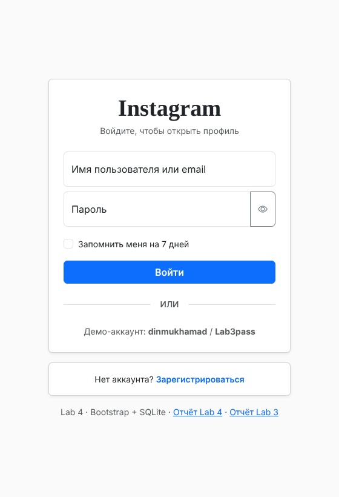
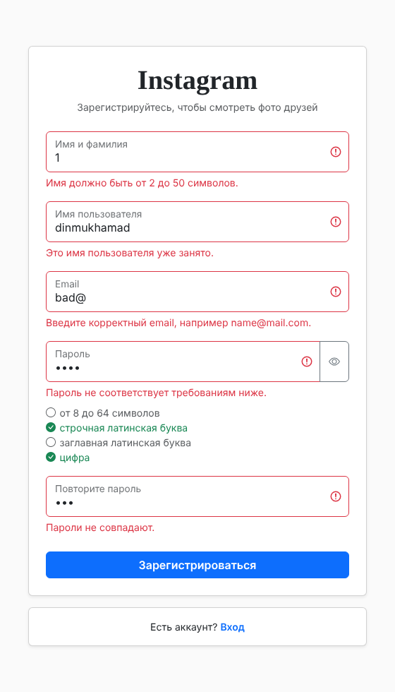
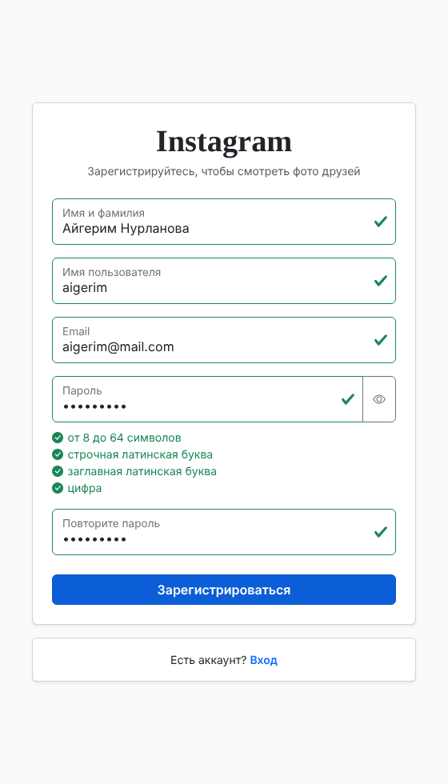
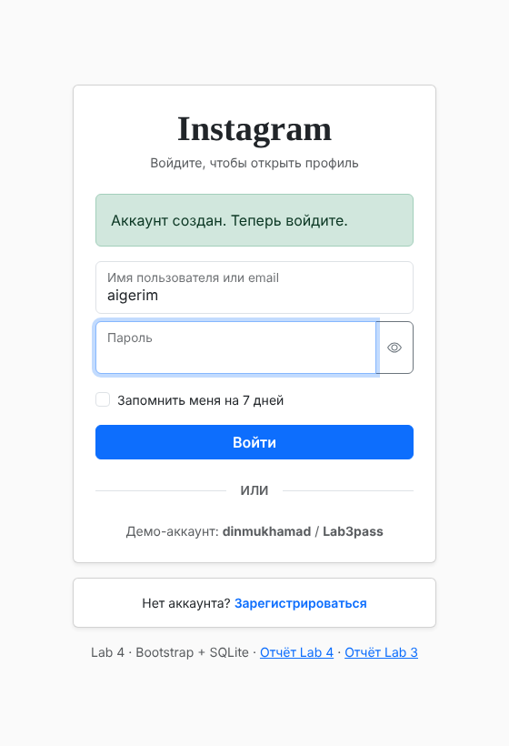
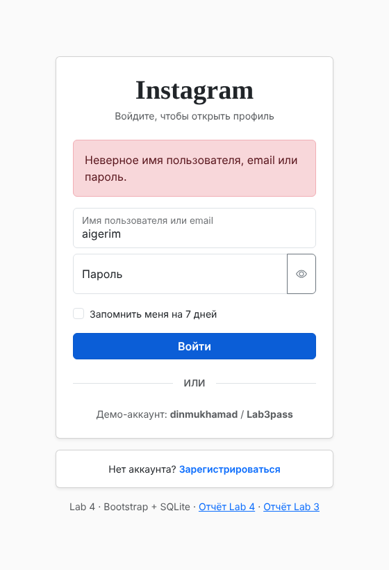
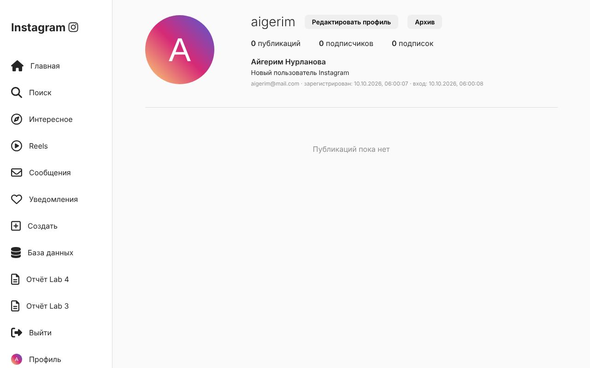
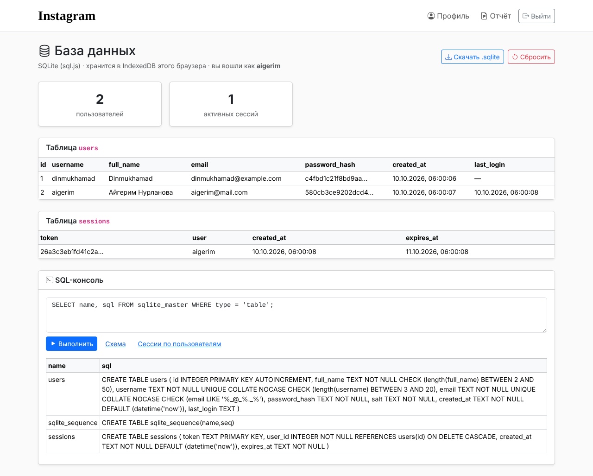
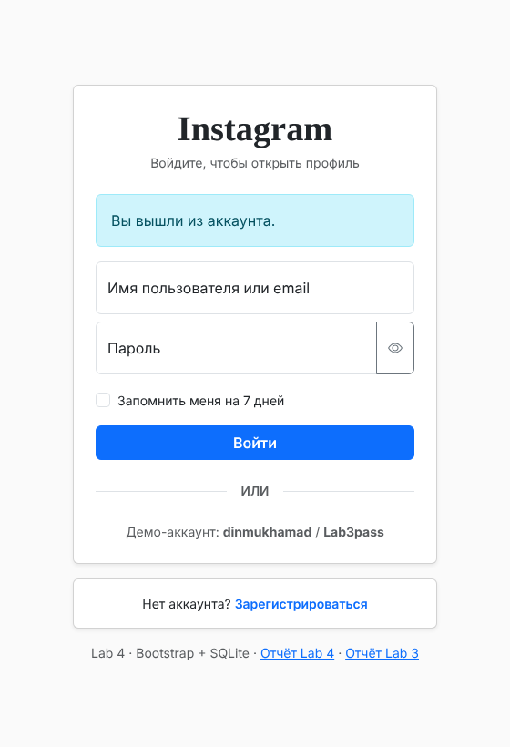
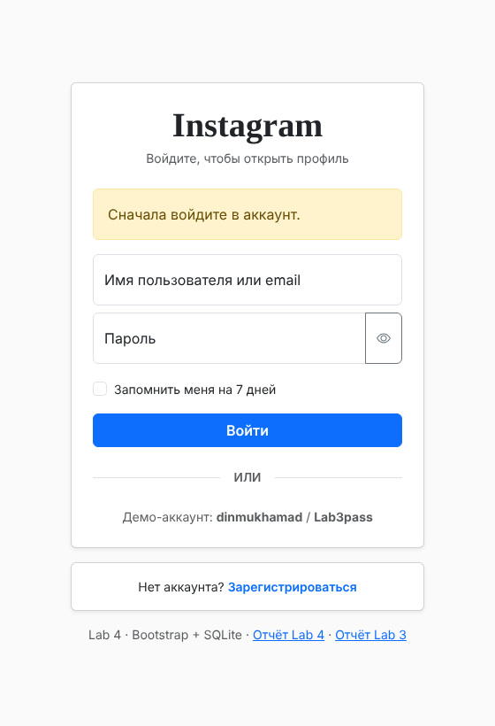

Доработать вход из Lab 3: добавить регистрацию, хранить пользователей в базе данных и оформить страницы с помощью CSS-фреймворка.
| Задача | Решение | Почему |
|---|---|---|
| Framework | Bootstrap 5.3.3 + Bootstrap Icons 1.11.3 (через CDN jsDelivr) | Готовая сетка, формы, карточки, таблицы, модальные окна и стили валидации (is-invalid, invalid-feedback). |
| Database | SQLite через sql.js 1.13.0 | Настоящая SQL-база (CREATE TABLE, INSERT, SELECT, JOIN, UNIQUE, CHECK), скомпилированная в WebAssembly. Работает в браузере, поэтому подходит для GitHub Pages. |
| Хранение файла базы | IndexedDB | Встроенное хранилище браузера: файл базы сохраняется после каждого изменения и не теряется при перезагрузке. |
| Пароли | PBKDF2-SHA256, 100 000 итераций, уникальная соль (Web Crypto API) | Пароль нельзя восстановить из хеша, одинаковые пароли дают разные хеши. |
| Сессии | Таблица sessions + cookie lab4_session | В cookie лежит только случайный токен; кто вошёл, определяется по базе. |
index.html. При первом открытии создаётся база данных с таблицами и демо-пользователем.register.html), заполняет форму, данные проверяются и записываются в таблицу users.index.html?registered=1&login=…: сообщение «Аккаунт создан», логин уже подставлен.sessions, а токен сохраняется в cookie.profile.html с данными пользователя из базы. Без действующей сессии она перенаправляет на index.html?error=auth.lab4/database.html показывает содержимое таблиц и содержит SQL-консоль.index.html?logout=1.CREATE TABLE users (
id INTEGER PRIMARY KEY AUTOINCREMENT,
full_name TEXT NOT NULL CHECK (length(full_name) BETWEEN 2 AND 50),
username TEXT NOT NULL UNIQUE COLLATE NOCASE
CHECK (length(username) BETWEEN 3 AND 20),
email TEXT NOT NULL UNIQUE COLLATE NOCASE CHECK (email LIKE '%_@_%._%'),
password_hash TEXT NOT NULL,
salt TEXT NOT NULL,
created_at TEXT NOT NULL DEFAULT (datetime('now')),
last_login TEXT
);
CREATE TABLE sessions (
token TEXT PRIMARY KEY,
user_id INTEGER NOT NULL REFERENCES users(id) ON DELETE CASCADE,
created_at TEXT NOT NULL DEFAULT (datetime('now')),
expires_at TEXT NOT NULL
);| Связь | Описание |
|---|---|
users 1 — N sessions | У пользователя может быть несколько сессий (разные браузеры или вкладки). При удалении пользователя его сессии удаляются (ON DELETE CASCADE). |
COLLATE NOCASE делает логин и email нечувствительными к регистру: Dinmukhamad и dinmukhamad считаются одним логином.
async function load() {
const SQL = await initSqlJs({ locateFile: (file) => SQL_JS_CDN + file });
const bytes = await readFile(); // файл базы из IndexedDB
if (bytes) {
db = new SQL.Database(bytes);
} else {
await create(SQL); // CREATE TABLE + демо-пользователь
}
db.exec('PRAGMA foreign_keys = ON');
return db;
}
async function save() {
await writeFile(db.export()); // файл базы → IndexedDB
}function query(sql, params = []) {
const stmt = db.prepare(sql);
try {
stmt.bind(params); // значения подставляет SQLite
const rows = [];
while (stmt.step()) rows.push(stmt.getAsObject());
return rows;
} finally {
stmt.free();
}
}
Db.query('SELECT id, password_hash, salt FROM users WHERE username = ? OR email = ?', [login, login]);Данные пользователя никогда не склеиваются со строкой SQL, поэтому SQL-инъекция вида ' OR 1=1 -- не работает (тест 15).
async function register(data) {
const errors = Validation.register(clean); // 1) правила полей
if (Object.keys(errors).length) return { ok: false, errors };
await Db.open();
const taken = Db.query('SELECT username, email FROM users WHERE username = ? OR email = ?',
[clean.username, clean.email]); // 2) уникальность
...
const salt = randomHex(16);
Db.run(`INSERT INTO users (full_name, username, email, password_hash, salt)
VALUES (?, ?, ?, ?, ?)`,
[clean.fullName, clean.username, clean.email, await hashPassword(clean.password, salt), salt]);
await Db.save(); // 3) UNIQUE / CHECK в самой базе
return { ok: true, errors: {} };
}Пароль хешируется функцией PBKDF2 (100 000 итераций SHA-256) с уникальной случайной солью:
async function hashPassword(password, saltHex) {
const key = await crypto.subtle.importKey('raw', new TextEncoder().encode(password), 'PBKDF2', false, ['deriveBits']);
const bits = await crypto.subtle.deriveBits(
{ name: 'PBKDF2', hash: 'SHA-256', salt, iterations: 100000 }, key, 256);
return toHex(bits);
}async function login(loginValue, password, remember) {
const [user] = Db.query('SELECT id, password_hash, salt FROM users WHERE username = ? OR email = ?', [login, login]);
if (!user || (await hashPassword(password, user.salt)) !== user.password_hash) {
return { ok: false, errors: { form: 'Неверное имя пользователя, email или пароль.' } };
}
const token = randomHex(32); // 256 бит случайности
Db.run("INSERT INTO sessions (token, user_id, expires_at) VALUES (?, ?, datetime('now', ?))",
[token, user.id, remember ? '+7 days' : '+1 day']);
Db.run("UPDATE users SET last_login = datetime('now') WHERE id = ?", [user.id]);
await Db.save();
setCookie('lab4_session', token, remember ? 7 * 24 * 60 * 60 : undefined);
return { ok: true, errors: {} };
}
async function currentUser() { // кто вошёл — по токену из cookie
const [user] = Db.query(
`SELECT u.* FROM sessions s JOIN users u ON u.id = s.user_id
WHERE s.token = ? AND s.expires_at > datetime('now')`, [getCookie('lab4_session')]);
return user ?? null;
}| Cookie | Значение | Срок | Атрибуты |
|---|---|---|---|
lab4_session | случайный токен (64 hex-символа) | до закрытия браузера, или 7 дней с «Запомнить меня» | path=/web_labs/, SameSite=Lax, Secure (на HTTPS) |
Поддельный токен не найдётся в таблице sessions, поэтому доступа не даст (тест 31). Сообщение об ошибке входа общее: по нему нельзя понять, существует ли такой логин.
Формы входа и регистрации объявлены с method="post". Отправку обрабатывает JavaScript (event.preventDefault()), так как на GitHub Pages нет сервера. GET-параметры в адресе: ?registered=1, ?login=…, ?logout=1, ?error=auth.
| Уровень | Где | Что проверяет |
|---|---|---|
| 1. Форма | register.html, index.html + validation.js | Формат полей сразу при вводе; занятость логина и email — запросом к базе при уходе с поля. |
| 2. Логика | auth.js | Повторная проверка тех же правил и уникальности перед записью — даже если форму обойти. |
| 3. База данных | Схема SQLite | NOT NULL, UNIQUE, CHECK — база не примет некорректную запись (тест 28). |
| Поле | Правило |
|---|---|
| Имя и фамилия | 2–50 символов, только буквы (в том числе кириллица), пробел, -, ' |
| Имя пользователя | 3–20 символов, a–z A–Z 0–9 _ ., уникально без учёта регистра |
формат name@domain.zone, до 100 символов, уникален | |
| Пароль | 8–64 символа, строчная и заглавная латинская буква, цифра (список требований обновляется при вводе) |
| Повтор пароля | совпадает с паролем |
Подключение через CDN:
<link rel="stylesheet" href="https://cdn.jsdelivr.net/npm/bootstrap@5.3.3/dist/css/bootstrap.min.css">
<link rel="stylesheet" href="https://cdn.jsdelivr.net/npm/bootstrap-icons@1.11.3/font/bootstrap-icons.min.css">
<script src="https://cdn.jsdelivr.net/npm/bootstrap@5.3.3/dist/js/bootstrap.bundle.min.js"></script>| Компонент Bootstrap | Где используется |
|---|---|
Сетка и утилиты (container, row, col-*, d-flex, min-vh-100) | Раскладка всех страниц, адаптивность |
| Card | Формы входа и регистрации, карточки на странице базы |
Forms: form-floating, input-group, form-check | Поля с «плавающими» подписями, кнопка показа пароля, «Запомнить меня» |
Validation: is-invalid, is-valid, invalid-feedback | Подсветка полей и текст ошибок |
| Alerts | Сообщения: аккаунт создан, вы вышли, неверный пароль |
| Buttons + Spinner | Кнопки форм, индикатор загрузки во время запроса к базе |
| Navbar | Верхнее меню страницы базы данных |
Table (table-hover, table-responsive) | Таблицы users, sessions, результат SQL-консоли |
| Modal (JavaScript Bootstrap) | Подтверждение сброса базы |
| Bootstrap Icons | Иконки: глаз, база, выход, загрузка |
web_labs/
├── index.html вход (Bootstrap)
├── register.html регистрация (Bootstrap)
├── profile.html страница Instagram — только после входа
├── style.css стили профиля
├── lab3/ Lab 3 (отчёт)
└── lab4/
├── db.js SQLite: схема, открытие, сохранение в IndexedDB, запросы
├── auth.js регистрация, вход, выход, сессии, cookie, хеш пароля
├── validation.js правила валидации
├── forms.js вывод ошибок в формах Bootstrap
├── lab4.css дополнения к Bootstrap
├── database.html просмотр таблиц, SQL-консоль, скачивание .sqlite
├── report.html этот отчёт
└── screenshots/Все сценарии проверены автоматически в браузере Chromium (Playwright).
| # | Сценарий | Итог |
|---|---|---|
| 1 | Сайт открывается со страницы входа | ✓ |
| 2 | Bootstrap подключён (стили кнопок) | ✓ |
| 3 | profile.html без сессии → вход с предупреждением | ✓ |
| 4 | Регистрация: пустая форма — 5 ошибок | ✓ |
| 5 | Регистрация: неверные форматы всех полей, пароли не совпадают | ✓ |
| 6 | Список требований к паролю: abc — выполнено 1 из 4 | ✓ |
| 7 | Занятый логин dinmukhamad показывается при уходе с поля | ✓ |
| 8 | Занятый email в другом регистре | ✓ |
| 9 | Пароль Secret123 — выполнено 4 из 4 | ✓ |
| 10 | После регистрации → index.html?registered=1&login=test_user | ✓ |
| 11 | Сообщение «Аккаунт создан», логин подставлен | ✓ |
| 12 | Пользователь записан в таблицу users | ✓ |
| 13 | Пароль хранится как хеш (64 символа) с солью, не открытым текстом | ✓ |
| 14 | Неверный пароль — сообщение об ошибке | ✓ |
| 15 | SQL-инъекция ' OR 1=1 -- в логине не проходит | ✓ |
| 16 | Вход по email (в другом регистре) → profile.html | ✓ |
| 17 | Профиль показывает логин, имя и email из базы | ✓ |
| 18 | Новый пользователь: аватар с буквой, «Публикаций пока нет» | ✓ |
| 19 | Cookie lab4_session: сессионная, path=/web_labs/, токен 64 символа | ✓ |
| 20 | Сессия записана в таблицу sessions | ✓ |
| 21 | После перезагрузки страницы данные и сессия сохраняются | ✓ |
| 22 | Уже вошёл: index.html → profile.html | ✓ |
| 23 | Страница базы: 2 пользователя, 1 активная сессия | ✓ |
| 24 | SQL-консоль: SELECT COUNT(*) возвращает 2 | ✓ |
| 25 | SQL-консоль: ошибка в запросе показывается | ✓ |
| 26 | Скачанный файл — настоящая база SQLite (заголовок «SQLite format 3») | ✓ |
| 27 | Повторная регистрация Test_User в обход формы отклонена | ✓ |
| 28 | Прямой INSERT с логином ab отклонён ограничением CHECK | ✓ |
| 29 | Выход → index.html?logout=1 | ✓ |
| 30 | После выхода сессия удалена из базы и cookie | ✓ |
| 31 | Поддельный токен в cookie → вход, cookie удалена | ✓ |
| 32 | «Запомнить меня» — cookie на 7 дней | ✓ |
| 33 | Владелец сайта видит свои фото | ✓ |
| 34–36 | Профиль, база данных, регистрация на ширине 375px — без горизонтальной прокрутки | ✓ |
| 37 | Сброс базы — остаётся только демо-пользователь | ✓ |




?registered=1&login=…)


users, sessions и SQL-консоль
?logout=1)
?error=authВ ходе работы на сайт добавлены регистрация и вход с хранением данных в базе SQLite. База создаётся и работает прямо в браузере (sql.js, WebAssembly) и сохраняется в IndexedDB, поэтому сайт продолжает работать на GitHub Pages без сервера. Таблица users хранит пользователей с хешем пароля (PBKDF2 с солью), таблица sessions — активные сессии; в cookie записывается только случайный токен. Все запросы параметризованы, что защищает от SQL-инъекций. Данные проверяются на трёх уровнях: в форме, в логике регистрации и ограничениями самой базы (UNIQUE, CHECK). Интерфейс оформлен с помощью фреймворка Bootstrap 5: карточки, плавающие поля, стили валидации, таблицы, навигация и модальное окно. Все 37 тестовых сценариев пройдены.
Ограничение: база хранится в браузере каждого посетителя отдельно. Для общей базы между всеми пользователями нужен сервер или облачная база данных (например, Supabase или Firebase).